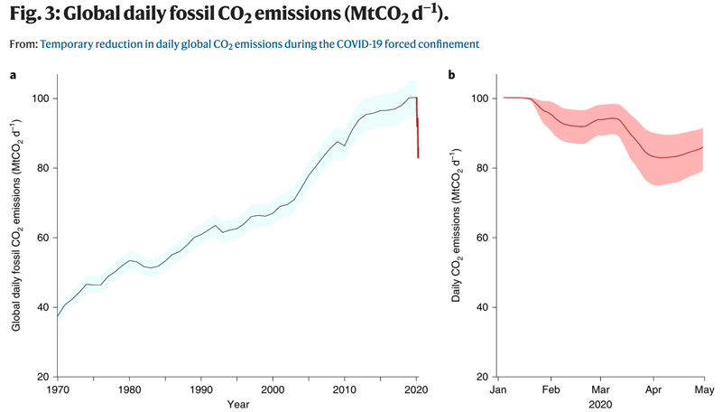

Welcome to the Carbon Emission Predictor — where you can predict the
equivalent CO2 in the US impacted by transitioning to electric transportation.
This needs wordsmithing.
Header/Directions/Title
The predictor and all its loveliness goes here
May not need a header

Annual mean daily emissions in the period 1970–2019 (black line), updated from the Global Carbon
Project1,3 (Methods), with uncertainty of ±5% (±1σ; grey shading). The red line shows the daily
emissions up to end of April 2020 estimated here. b, Daily CO2 emissions in 2020 (red line, as
in a) based on the CI and corresponding change in activity for each CI level (Fig. 2) and the
uncertainty (red shading; Table 2). Daily emissions in 2020 are smoothed with a 7-d box filter
to account for the transition between confinement levels. (Source: www.nature.com/articles/s41558-020-0797-x/figures/3)
Overview
The worldwide predicted global warming increase above pre-industrial levels of
1.5°C may have a substantial impacts and risks by 2050.
This project focuses on the measured CO2 reduction recorded during the Covid-19
pandemic of 2020.
Governmental and NGO policies during the Covid-19 pandemic changed human
behavior resulting in decreased energy demand. At the peak in April of 2020, daily global CO2
emissions
decrease 19% compared to 2019 (Integrated Carbon Observation System).
Data from various sources was used to test-train a dataset to determine the predictability of
reducing carbon emission in the transportation sector by replacing internal combustion
vehicles with electric vehicles (EV).
This project looks at the carbon impact from transportation in the US only. It assumes the
future EVs will use energy from renewable sources (solar and wind) and not from coal-fired
or gas-fired energy generation. This project also does not take into account the effects of manufacturing or lifecycle
issues of EV batteries.
This will be a map with the the US map showing a bubble plot of the
the carbon emissions. Question is do we show historical data (prior to 2019) or just the
data 2019-2021 dataset? This will require us to get historical data, which would be
easy to do.
If we don't want to use a map, this could also be a bubble plot of vehicle use
vs emissions per state.
Process
This project showcases storytelling through data visualizations, providing the user
interactive means to explore the data.
The project methodology focused on:
Working as a team, demonstrated by using branches in GitHub to manage the
push/merge/pull of the repository.
ETL of chosen data set(s).
Libraries and languages used to develop the CO2 emissions predictor:
Python
HTML
CSS
D3
Javascript
Plotly
Leaflet
Tableau
And whatever else.....
Data & Resources
Data for the estimator was derived from various sources:
2019-2021 US CO2 emissions dataset from Carbon Monitor. Carbon emission data is measure in MTCO2 equivalent. Which is a metric used to compare the emissions from different green house gases based on their global warming potential.
Business analyst consultant with 6+ years of experience and a background in data
analysis, process improvement, and business facilitation. Proven ability to work
cross-functionally across business disciplines and roles for the purpose of
gathering business objectives and software/data requirements. Driven by personal satisfaction
derived from building data models and visualizations to provide insights into
business and process improvement decision making.
Promoting sustainability in the built environment and the health/wellbeing of
occupants. With degrees in architecture and accreditations in LEED and WELL, Kerry’s value is
being a bridge between the technical and design fields to promote and deploy resilient,
sustainability, and wellbeing strategies.